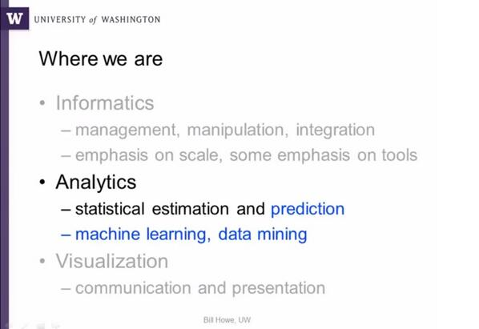

June 2013
W3C workshop RDF Validation, 10-11 Sept, submission deadline extended 1w. w3.org/2012/12/rdf-va… Examples w3.org/2012/12/rdf-va…
MT @stanfordbmi: @Rbaltman's talk on clinical pharmacogenetics at TEDxStanford youtube.com/watch?v=X1iKib… < Great overview of PKPD
The administrative geography and civil voting area ontology data.ordnancesurvey.co.uk/ontology/admin… #linkeddata
.@anpie Dags för postnr som URIer, ex. data.posten.se/id/postnr/4423… på samma sätt som i UK: johngoodwin225.wordpress.com/2013/06/03/new… #lankadedata
Cool: Renault uses Configuration URI, a global identifier for Partially Defined Products videolectures.net/eswc2012_cheva… #LinkedData
@LOINC Think you should. Increasing interest in #SemanticWeb cross Health Care & Clinical Research data SDO:s, e.g cdisc2rdf.com
MT @ericaxel: Semantic Web Jobs: SAS Institute bit.ly/126Qeuk "Knowledge of #semanticweb standards like RDF, OWL, SKOS"
Nice: 10 tips on responsibly reporting clinical trials from @Roobina storify.com/NeuroWhoa/ten-… < No 11: See kerfors.blogspot.se/2013/03/talkin…
+1 > Linked Data Glossary w3.org/TR/ld-glossary/ @BernHyland @gatemezing Michael Pendleton Biplav Srivastava <When a #linkeddata version?
MT @egonwillighagen: CINF Webinar today: Using Wikipedia as a Source of Chemical Info acscinf.org/content/webina… /ping @PederSGbg
@PederSGbg H againi, interesting thread started by @PistoiaAlliance as follow-up to yesterday's discussion twitter.com/pistoiaallianc…
Winding down for a couple if days off before I'm off to Montreal for the Semantic Trilogy events kerfors.blogspot.se/2013/06/semant…
@egonwillighagen The dataset is published as Excel (of course :) together with the paper as suppl mtrl rd.springer.com/article/10.120…
The Misunderstanding of #MDM evanjlevy.wordpress.com/2013/05/17/the… by @EvanJayLevy via @MetadataJunkie @Nicola_Askham < Checkout 3roundstones.com/linked-data-10…
+1 RT @SaraRiggare: New blog post: "What is the currency in #health?" riggare.se/2013/06/26/wha… #hcsm
BDDCS applied to over 900 drugs ncbi.nlm.nih.gov/m/pubmed/21818… < Yet another good case for code.google.com/p/semanticchem… /ping @egonwillighagen
Dear @LOINC, what are your plans for an official SKOS/RDF version of 5/6-dim system for #LOINC codes? See ncbi.nlm.nih.gov/pmc/articles/P…
Roche & AZ "will give MedChemica chemical compounds details" on.wsj.com/147NH6m via @AndyBiotech < Good case for code.google.com/p/semanticchem…
Looking forward to an intensive #semanticweb and #ontology week at Semantic Trilogy in Montreal kerfors.blogspot.se/2013/06/semant…
URI = universal identification scheme, RDF = universal data model lists.w3.org/Archives/Publi… #linkeddata
Dear @US_FDA, the RDF Data Cube vocabulary w3.org/TR/vocab-data-… looks like a perfect case for clinicaltrials.gov/ct2/manage-rec… #ctdata
Interesting > RT @ukan_net: Interested in Learning more about Anonymising your Data - go to ukanon.net/interested-in-…
“started by thinking carefully about the URIs that we are using to name and address texts and other objects” sites.tufts.edu/perseuscatalog…
A quick look at the #semic tweets and slides joinup.ec.europa.eu/node/61062 after the Swedish midsummer herring and before the evening BQ
Interesting > RT @sclopit: ukanon.net best anonymization practices for those who handle personal data and need to share them
@CDISC and TransCelerate BioPharma chosen @soasoftwareinc Semantic Manager product for #CDISC SHARE cdisc.org/cdisc-and-tran…
At least RDF is mentioned as an export format: @CDISC &TransCelerate BioPharma to Implement #CDISC SHARE cdisc.org/cdisc-and-tran…
Good pre-read on RDF Data Cube-based Investigation into Population Statistics hicss.hawaii.edu/hicss_46/bp46/…
First International Workshop on Semantic Statistics (SemStats 2013) datalift.org/en/event/semst… #iswc2013 /ping @PHUSETwitta)
Why #ctdata (sum & patient level) in RDF > MT @deb_cohen: internal reports presented more AE data than publications bit.ly/11PHSr4
ClinicalTrials.gov "Basic Results" Data Element Defs prsinfo.clinicaltrials.gov/results_defini… < One more pdf w/ data standards prescribing text strings :(
+1 RT @pgroth: yes! - Henry Thompson: "persistence does not have a technical solution" - need social contracts #oai8
Having a look at the Open Company Data Index by @opencorporates registries.opencorporates.com via @josemalonso Norway way ahead of Sweden
A djungle of Excel:s Word:s PowerPoint:s and loads of user interfaces populating database attributes with text string #everydaylife
MT @TheHyveNL: The final dev meeting is all about API lanyrd.com/2013/transmart… << I do hope they look at @Open_PHACTS' #linkeddata API
MT @dsmoley: Looking for an awesome VP of IT Security and Compliance lnkd.in/dMu65e < Time for a VP of Data Transparency?
#lazyweb I'm looking for a "semantic web cake" illustration incl. SKOS, VoID, PROV-O, SPIN etc. #semanticweb #linkeddata
Was remined today: "It's odd how we share results of clinical trials in C19th essay format." @bengoldacre kerfors.blogspot.se/2013/03/talkin…
Thanks @bBalsa for reminding me of my favorite #LinkedData quotes: kerfors.blogspot.se/2012/06/to-who…
+1 MT @Prototypo: "Jargon free" Linked Data intro now in video by popular demand youtu.be/gd6ccBomspw #linkeddata
Interesting initial discussions: RDF Vocabs for stats. and surveys, w/ Data Documentation Initiative (DDI) ddialliance.org/Specification/… #cdisc2rdf
Dear colleagues in the Manchester area: #linkeddata meeting next Weds ukgovld2.eventbrite.co.uk /via @UKGovLD
30+ ppl from FDA, CDISC, pharma:s, CRO:s, software vendors in the FDA/PhUSE Semantic Technology teleconf phusewiki.org/wiki/index.php…
Intstructions for Importing #cdisc2rdf ontologies into TopBraid Composer & Protégé FDA/PhUSE Semantic Tech. project phusewiki.org/wiki/index.php…
Landen Bain, #CDISC, presents the IHE profile: Data Element Exchange (DEX) ihe.net/Technical_Fram… for the FDA/PhUSE Semantic Techn. project
MT @fdalawblog: Striding Towards Greater Access of Clinical Trials Data and Results bit.ly/19xjEK8 via @MarilynMann #ctdata
I'm looking for a "#SemanticWeb Cake" with #RDF based standards for common aspects eg. #SKOS #PROV #VoiD kerfors.blogspot.se/2013/06/standa…
Dear @SASsoftware please consider RDF-based standards for common aspects eg.dataset descriptions, provenance kerfors.blogspot.se/2013/06/standa…
Dear @SharePoint please consider RDF-based standards for eg. term sets and provenance kerfors.blogspot.se/2013/06/standa…
Dear @Accelrys please consider RDF-based standards for common aspects, eg dataset descriptions, provenance kerfors.blogspot.se/2013/06/standa…
Dear @Parexel please consider RDF-based standards for common aspects, eg dataset descriptions, provenance kerfors.blogspot.se/2013/06/standa…
Dear @Medidata please consider RDF-based standards for common aspects, eg dataset descriptions, provenance kerfors.blogspot.se/2013/06/standa…
+1 @Oracle to use W3C provenance standard to create a single audit time line across systems kerfors.blogspot.se/2013/06/standa…
lol > MT @hadleybeeman: RDF/OWL classes for vampires, goblins, demons, zombies ... dbpedia.org/class/yago/Zom… dbpedia.org/class/yago/Evi…
New blog post "pushing back" for software vendors to use VoiD, PROV, SKOS etc. kerfors.blogspot.se/2013/06/standa… #linkeddata
Synergies? Cheminfo ontology code.google.com/p/semanticchem… AND #wikidata chemistry properties wikidata.org/wiki/Wikidata:… cc: @egonwillighagen
lol > RT @JamesKobielus: #Metadata. Suddenly one of the geekiest data management terms is everywhere and nobody's falling asleep.
DDI RDF Vocabularies for data in social, behavioral, & economic sciences ddialliance.org/Specification/… using #RDF Data Cube & #SKOS
Data Documentation Initiative (DDI) standard for describing data in social, behavioral, & economic sciences ddialliance.org
After all the buzz around #metadata - check out this course on @coursera coursera.org/course/metadata
@gray_alasdair Great question -- that whay we eant to know also in this project phusewiki.org/wiki/index.php…
Bridging the gap between clinical research, pharmacoviligence and patient care srdc.com.tr/projects/salus… from @SALUSProject_EU
+1 MT @SALUSProject_EU: New blog post: Semantic Metadata Registry/Repository bit.ly/11abwXZ #metadata #ISO11179
MT @ElyKahn: We (@sqrrl_inc) do Secure #JSON via #accumulo cell-level security ow.ly/lOMIc < Perfect for patient-level data
From #semtechbiz workshop/panel: #RDF as a Universal Healthcare Exchange Language dbooth.org/2013/semtech/ #eHealth #linkeddata
ATC/DDD whocc.no/atc_ddd_index/ < How about these as 5-star #LinkedData 5stardata.info in #SKOS? Ping @Folkehelseinst @WHO
Gartner: "knowledge workers expect to get info in the context of their situation" zite.to/14jSaDO via @mikeloukides #instantcontext
I really like how @billghowe builds up the #datascience lectures class.coursera.org/datasci-001/ Next: machine learning.

+1: The Linked Patient -- Patient-Centric, Health-Data Publication caregraf.info/papers/LinkedP… from @caregraf #linkeddata
Conor Dowling makes a good case of #SKOS as the release form: "So many schemes" in #semtechbiz workshop youtu.be/K-pRGTaQSsA
Great 5 min from Charles Mead: "Barriers to computable semantic interoperability" youtu.be/L9lEnY5-TBM #semtechbiz #semanticweb
@tom_munnecke Thank you for the @YouTube videos from the #semtechbiz workshop on RDF for health care data
World's health researchers alliance to build data-sharing future sco.lt/8kMwl7 modelled on @w3c < Hopefully using #w3c standards
MT @MyScienceWork: Mead: The necessary ontologies today exists. We should share semantics and create overlapping links #WRIChealth
MT @MyScienceWork: Charles Mead: From Bedside to Bench and back.. and beyond #WRIChealth #datamining and #SemanticWeb
Would like to hear @Prototypo talk to these nice slides: My "jargon-free" #LinkedData intro from hdpalooza slideshare.net/3roundstones/l…
MT prototypo: My "jargon-free" Linked Data intro from Health Datapalooza: slideshare.net/3roundstones/l… #LinkedData
W3C provenance standard for audit trail across @Oracle's systems w3.org/QA/2013/05/int… < How about #spotfire? Ping @TIBCOSpotfire
W3C provenance standard for audit trail across @Oracle's systems w3.org/QA/2013/05/int… < How about #QlikView? Ping @QlikView
W3C provenance standard for audit trail across @Oracle's systems w3.org/QA/2013/05/int… < How about #PipelinePilot? Ping @Accelrys
From @NewYorker: The power of names newyorker.com/online/blogs/e… < See also: More than names, biomedical ontologies sciencecareers.sciencemag.org/career_magazin…
Very nice blog post by @Jenz514 > MT @ericaxel: Google Talks Structured Data At #SemTechBiz bit.ly/19IBo3J
W3C provenance standard for audit trail across @Oracle's systems < Ping @SASsoftware @LexJansen w3.org/QA/2013/05/int…
MT @ericaxel: "A Higher Calling of Semantic Technology: Linking Data to Save Lives" bit.ly/18SNlFa with @hconstandt
+1 MT @egombocz: Jason Douglas, Google: “Semantics at scale requires extreme high data quality at the beginning, not later!” #semtechbiz
.@RebarInter No 2(2) on my list of #SemanticWeb books is 3roundstones.com/linking-enterp… by @Prototypo
.@RebarInter No 1(2) on my list of #SemanticWeb books is workingontologist.org by @WorkingOntology and @jahendler
I've registered for @CamSemantics' webinar on how semantic tech helps w/ MDM, SOA & other enterprise data challenge attendee.gotowebinar.com/register/63355…
"Wikidata can contain contradicting statements, supported by different references." @vrandezo blog.wikimedia.de/2013/06/04/on-… #wikidata
MT @w3c: First Public Working Draft of URLs in Data Primer Published dlvr.it/3SygmW by @JeniT #linkeddata
World Research and Innovation conf. @WRIC_eu, 5-6 June, has a track with 3 #semanticweb experts: Charlie Mead, @barendmons, Mark Wilkinson
+10 MT @LeeFeigenbaum: Charlie Mead: #SemanticWeb tech doesn't solve semantic problems, but it surfaces them so they can be solved
Catching up on 2 intersting events dataforhealth.imia.info in Brussels #d4h13 and healthdatapalooza.org in Washington #hdpalooza
Great! Minutes from #semtechbiz workshop “RDF as a Universal Healthcare Exchange Language” are online docs.google.com/document/d/1bP…
“semantic technology ... helping you deal with a certain amount of uncertainty and chaos” semanticweb.com/why-two-indust… via @ericaxel
#XSPARQL = query language combining XQuery and #SPARQL for transformations between #RDF and XML xsparql.deri.org/spec/usecases
I hope the #hdpalooza Tech Dev track moderated by @georgethomas healthdatapalooza.org/agenda/tech-de… is livestream:ed bit.ly/19BVJaW
Nice combo: @coursera's #DataScience lectures AND @khanacademy to recap things such as matrix multiplication and p-value
The decline effect and the scientific method newyorker.com/reporting/2010… Ref. by @billghowe in #DataScience course Timely #AllTrials
@CarlSchlyter Hej, ser att du är keynote speaker track 3 på worldresearchcongress.com/index.php Efter dej 3 föredrag om semantic web = Web 3.0
Now the #semtechbiz feed is starting to get busy with interesting comments from the tutorials semtechbizsf2013.semanticweb.com/agenda.cfm?con…
@om @naveen @Jawbone @fitbit @Nike @Withings How about Linked Personal Data? Checkout 4 principles for #LinkedData en.m.wikipedia.org/wiki/Linked_da…
MT @dhinchcliffe: New Tools Beget Revolutions: Big Data and the 21st Century. blogs.wsj.com/cio/2013/05/31… < Nice case for #clinicaltrials design